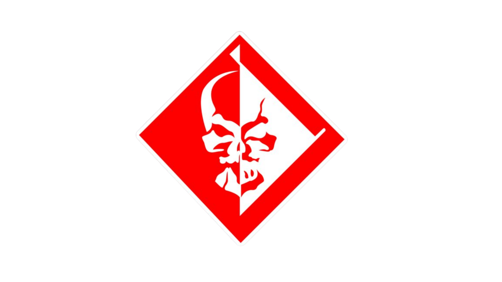

INFORMAÇÕES GERAIS
Samuel Rodrigues, conhecido como Jetstream Sam, é um espadachim brasileiro do jogo Metal Gear Rising: Revengeance. Ele atua como mercenário e foi membro da organização militar privada Desperado Enforcement. Diferente da maioria dos combatentes do jogo, Sam não depende excessivamente de aprimoramentos cibernéticos, destacando-se principalmente por sua habilidade extrema com a katana HF Murasama, seu estilo preciso e sua postura de duelista.
Sam não luta movido por dinheiro ou ideologias políticas, mas pela busca de adversários dignos e por um significado pessoal no combate. Ao longo da história, ele se torna o principal rival de Raiden, desenvolvendo com ele uma relação marcada por confronto, respeito e provocação. Sua personalidade confiante, seu código de honra próprio e seu carisma fizeram de Jetstream Sam um dos personagens mais marcantes e populares de Metal Gear Rising: Revengeance.